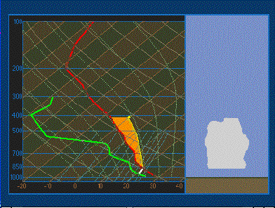

The Meanings of Curves

 The green curve represents the change of dew point
temperature with height, the red curve shows
the actual temperature change with height, and the yellow dot
creats a curve which shows the path of an air parcel. The first
portion of the path in this example is dry adiabatic. If it is colder than
the environmental air at these levels (to the left of the red sounding curve)
it must be lifted by some forcing mechanism since it is more dense than
the surrounding air. If the parcel is lifted until saturaiion is reached the
air parcel will change temperature with height more slowly because latent heat is released. This
difference in its lapse rate can cause it to eventually be warmer than
the surrounding air. It will then be bouyant and rise on its own.
The green curve represents the change of dew point
temperature with height, the red curve shows
the actual temperature change with height, and the yellow dot
creats a curve which shows the path of an air parcel. The first
portion of the path in this example is dry adiabatic. If it is colder than
the environmental air at these levels (to the left of the red sounding curve)
it must be lifted by some forcing mechanism since it is more dense than
the surrounding air. If the parcel is lifted until saturaiion is reached the
air parcel will change temperature with height more slowly because latent heat is released. This
difference in its lapse rate can cause it to eventually be warmer than
the surrounding air. It will then be bouyant and rise on its own.
When
the temperature of air parcel is warmer than enrironmental air, the vertical
motion can occur without other forcing. If the rising air cools to saturation
cloud formation will result.